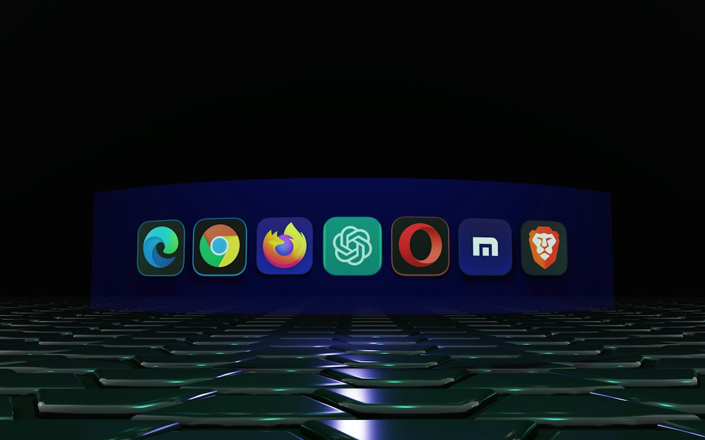

I 3 Errori Più Gravi dei Social Media Manager e Come SocialEngine AI Li Risolve in 40 Secondi

3 Errori Comuni nella Gestione Social Media e la Soluzione Innovativa per Social Media Manager, Consulenti, Creator e PMI
- Ore perdute nella creazione manuale di post e grafiche riducono la produttività e la costanza.
- La scarsa continuità di pubblicazione limita la crescita e l’engagement sui social.
- SocialEngine AI automatizza la creazione di caroselli efficaci, integrando palette e copy in meno di un minuto.
Analisi Approfondita della Notizia e delle Implicazioni Operative
Nel panorama attuale del social media marketing B2B, molti professionisti – dai Social Media Manager ai Consulenti, Creator e PMI – si trovano schiacciati da processi manuali obsoleti. La creazione di contenuti visivi è spesso affidata a strumenti generici come Canva, che richiedono ore di lavoro per ogni singolo post. Questo rallentamento sistematico conduce a una pubblicazione irregolare e poco strategica.
L’errore più frequente è la sottovalutazione del valore del tempo e della costanza. Senza un flusso di lavoro automatizzato, la qualità del contenuto e la frequenza di pubblicazione ne risentono, danneggiando la visibilità e il posizionamento online. In un’epoca in cui la comunicazione sui social è cruciale, la perdita di tempo si traduce in opportunità commerciali lasciate all’incuria.
Un altro aspetto critico è la coerenza visiva: estrarre manualmente palette colore e armonizzare copy e grafica significa spesso scostarsi dall’identità di brand, diminuendo l’efficacia persuasiva dei messaggi. Questo fattore indebolisce l’esperienza utente, scoraggiando l’interazione e la fidelizzazione.
Le Conseguenze e i Costi di Non Agire
Il primo costo tangibile riguarda le ore lavorative disperse nella creazione artigianale dei post. Questo tempo sottratto alle attività strategiche incide pesantemente sul rendimento e sui risultati di business. La scarsa costanza di pubblicazione, invece, influisce negativamente sull’algoritmo delle piattaforme social, riducendo la portata organica e l’engagement.
Dal punto di vista economico, questo si traduce in una perdita progressiva di lead qualificati e in una minore conversione delle campagne. I brand diventano meno visibili, i competitor più rapidi e automatizzati avanzano, lasciando indietro chi non evolve i propri processi di content creation.
Infine, l’assenza di un sistema integrato per gestire palette, grafiche e testi riduce l’efficacia comunicativa, creando un’esperienza utente dissonante e poco professionale. L’immagine online subisce un danno, riflettendosi in una percezione di scarsa cura e professionalità, elementi decisivi in mercati competitivi.
Come SocialEngine AI Risolve il Problema
SocialEngine AI di RM Studio nasce come risposta concreta a queste inefficienze operative. È un SaaS pensato specificamente per Social Media Manager, Consulenti, Creator e PMI che desiderano eliminare le perdite di tempo nella creazione di contenuti visivi professionali.
La sua funzione chiave è il generatore autonomo di caroselli: in soli 40 secondi produce un set completo di 5 slide ottimizzate per LinkedIn e Instagram, con copy persuasivo e design coordinato. Non si tratta di un semplice template, ma di un processo automatizzato che estrae automaticamente la palette colori dal sito web del brand, garantendo coerenza visiva e comunicativa.
Il sistema supporta la pubblicazione costante senza sacrificare la qualità, assicurando un flusso continuo di contenuti ottimizzati per stimolare engagement e incrementare la presenza digitale. Grazie a SocialEngine AI, il social media manager può finalmente dedicarsi a strategie di alto livello, lasciando la produzione grafica e testuale a un’intelligenza artificiale affidabile e specializzata.
| Gestione Tradizionale | Con SocialEngine AI |
|---|---|
| Ore di lavoro manuale per grafiche su Canva o software simili. | Creazione automatica in 40 secondi di caroselli con design professionale. |
| Palette colori e copy disorganizzati, con rischio incoerenza di brand. | Estrazione automatica della palette dal sito e copy persuasivo integrato. |
| Pubblicazione irregolare e scarsa costanza, con impatto negativo su engagement. | Flusso costante di post ottimizzati per LinkedIn e Instagram, miglior engagement e crescita organica. |
💡 Ti è stato utile questo approfondimento?
Condividilo con un collega o un amico del settore Social Media Manager, Consulenti, Creator e PMI a cui potrebbe interessare!
FAQ - Domande Frequenti per Social Media Manager, Consulenti, Creator e PMI
1. Quanto tempo risparmia realmente SocialEngine AI rispetto ai metodi tradizionali?
SocialEngine AI consente di generare un carosello completo in circa 40 secondi, riducendo drasticamente le ore che normalmente servirebbero per la progettazione grafica, la scelta della palette e la stesura del copy.
2. Il software è adatto anche a chi non ha competenze grafiche?
Sì, è progettato per essere intuitivo e accessibile anche a chi non ha esperienza in grafica, garantendo risultati professionali e coerenti con l’identità del brand senza interventi manuali complessi.
3. Posso personalizzare i caroselli generati da SocialEngine AI?
Certamente, SocialEngine AI offre flessibilità per modifiche successive, consentendo di adattare testi e grafiche alle esigenze specifiche di ciascun cliente o campagna.
Inizia Subito
Starter Pack da €29 per 10 caroselli o Pro Pack a €79 per 35 post.
Fonti Ufficiali e Risorse Esterne
Scopri l'Intelligenza Artificiale per la tua attività
Ottimizza i processi e aumenta le vendite con le soluzioni B2B di RM Studio.
Scopri SocialEngine AI